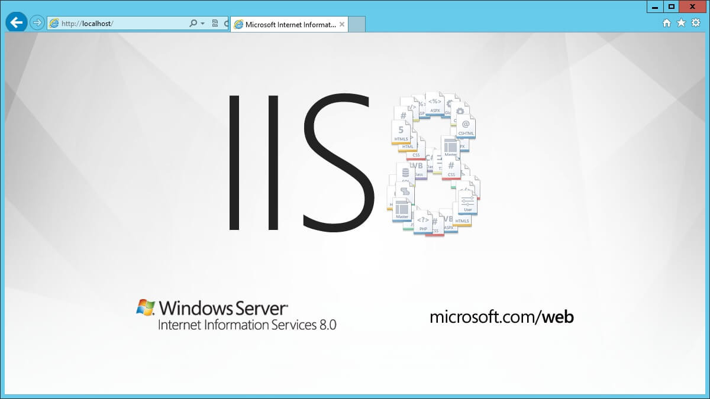

IIS es el famoso servidor web de Microsoft (realmente es más que eso), que además de poder montar nuestras páginas web sobre dicho servidor, IIS nos dará acceso a otros servicios como puede ser el caso de FTP.IIS es muy interesante ya que nos permite, de una forma cómoda, tener todo centralizado en una misma aplicación (a diferencia de LAMP que necesitas muchas aplicaciones independientes
Instalar IIS en Windows 10 Si hemos visto las principales alternativas del mercado y hemos decidido optar por instalar IIS en un Windows 10, deberíamos de saber algo: IIS no se instala, se habilita.Es decir, IIS es un complemento a Windows, por lo que no tendremos que bajar ninguna aplicación ni nada, simplemente tendremos que seguir unos pasos para tenerlo instalado y habilitado.
En este caso, sólo tendrás que seleccionar IIS (Internet Information Sever) y presionar en "aceptar", puedes seleccionar todas las opciones dentro de IIS para que se te habilite e instale, no obstante, si no sabes muy bien si instalarlo y tienes disco duro, te recomiendo instalarlo todo (a no ser, por ejemplo, que ya tengas un servidor FTP).Una vez instalado ¡Felicidades, ya está todo listo!Ahora puedes probar a poner la IP local (127.0.0.1) o directamente "localhost" en el navegador y ya deberías de tener acceso.
